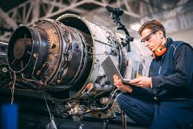

Inginerie Mecanica
Ingineria mecanică este una dintre cele mai vechi și mai importante ramuri ale ingineriei. Ea se ocupă cu proiectarea, analiza, fabricarea și întreținerea sistemelor mecanice.
Ce studiază ingineria mecanică
Ingineria mecanică combină cunoștințe din mai multe domenii, precum:
Mecanică (statică, dinamică, rezistența materialelor)
Termodinamică
Mecanica fluidelor
Știința materialelor
Proiectare asistată de calculator (CAD)
Procese de fabricație
Ce face un inginer mecanic
Un inginer mecanic poate:
Proiecta mașini, motoare și echipamente industriale
Analiza funcționarea și eficiența sistemelor mecanice
Îmbunătăți procesele de producție
Coordona activități de mentenanță
Dezvolta soluții tehnologice noi
Domenii de aplicare
Ingineria mecanică este prezentă în multe industrii, cum ar fi:
Industria auto
Industria aeronautică
Energie (termică, regenerabilă, nucleară)
Robotică și mecatronică
Industria manufacturieră
Biomedical (proteză, echipamente medicale)
Avantaje ale carierei
Domeniu foarte versatil
Cerere mare pe piața muncii
Posibilități de lucru în multe țări
Bază solidă pentru specializări ulterioare (mecatronică, inginerie auto, inginerie energetică)

Inginerie electrica
Ingineria electrică este ramura ingineriei care se ocupă cu studiul, proiectarea și exploatarea sistemelor electrice și electronice.
Ce studiază ingineria electrică
Ingineria electrică se bazează pe matematică, fizică și informatică și include discipline precum:
Circuite electrice
Electrotehnică
Electronică analogică și digitală
Mașini electrice (motoare, generatoare, transformatoare)
Sisteme de acționare electrică
Energie electrică și rețele
Automatizări și control
Măsurări electrice
Ce face un inginer electrician
Un inginer electrician poate:
Proiecta și analiza circuite și echipamente electrice
Dezvolta și întreține rețele electrice
Proiecta sisteme de automatizare industrială
Lucra cu motoare electrice și sisteme de acționare
Implementa soluții pentru eficiență energetică
Asigura mentenanța instalațiilor electrice
Domenii de aplicare
Ingineria electrică este esențială în:
Producerea și distribuția energiei electrice
Energie regenerabilă (solar, eolian)
Industria auto (vehicule electrice)
Automatizări industriale
Electronică de putere
Telecomunicații
Clădiri inteligente
Avantaje ale carierei
Cerere mare pe piața muncii
Domeniu bine plătit
Rol cheie în tranziția energetică
Posibilități de specializare (electronică de putere, rețele, automatizări, vehicule electrice)

Ingineria civila
Ingineria civilă este ramura ingineriei care se ocupă cu proiectarea, construirea și întreținerea infrastructurii necesare vieții moderne.
Ce studiază ingineria civilă
Ingineria civilă se bazează pe matematică, fizică și mecanică și include discipline precum:
Rezistența materialelor
Mecanica structurilor
Beton armat și structuri metalice
Geotehnică și fundații
Drumuri, poduri și căi ferate
Hidraulică și hidrotehnică
Managementul construcțiilor
Topografie
Ce face un inginer civil
Un inginer civil poate:
Proiecta clădiri, poduri, drumuri și alte structuri
Calcula și verifica siguranța construcțiilor
Coordona șantiere de construcții
Supraveghea execuția lucrărilor
Reabilita și consolida construcții existente
Asigura respectarea normelor tehnice și de siguranță
Domenii de aplicare
Ingineria civilă este esențială în:
Construcții civile și industriale
Infrastructură rutieră și feroviară
Poduri și tuneluri
Construcții hidrotehnice (baraje, diguri)
Urbanism și dezvoltare durabilă
Reabilitarea clădirilor
Avantaje ale carierei
Rol major în dezvoltarea societății
Cerere constantă de specialiști
Posibilitatea de a vedea rezultate concrete ale muncii
Diversitate mare de specializări (structuri, geotehnică, drumuri, hidrotehnică)

Ingineria aerospatiala
Ingineria aerospațială este ramura ingineriei care se ocupă cu proiectarea, dezvoltarea și exploatarea vehiculelor care zboară în atmosferă sau în spațiul cosmic.
Ce studiază ingineria aerospațială?
Acest domeniu combină cunoștințe avansate din:
aerodinamică,
mecanică și dinamica zborului,
structuri aerospațiale,
materiale avansate și compozite,
propulsie (motoare de avion, rachete),
avionică și sisteme de control,
termodinamică,
Mmcanica fluidelor,
Simulări și modelare numerică (CFD),
Ce face un inginer aerospațial?
Un inginer aerospațial poate:
Proiecta avioane, drone, elicoptere și nave spațiale,
analiza stabilitatea și performanța vehiculelor aeriene,
dezvolta motoare și sisteme de propulsie,
testa structuri și materiale în condiții extreme,
lucra la sateliți, rachete și sisteme spațiale,
dezvolta tehnologii pentru explorarea spațiului,
domenii de aplicare,
Ingineria aerospațială este esențială în:
industria aeronautică,
industria spațială (sateliți, rachete),
apărare și securitate,
drone și vehicule autonome,
cercetare și dezvoltare,
telecomunicații prin satelit,
avantaje ale carierei,
domeniu de vârf tehnologic,
proiecte complexe și inovatoare,
prestigiu profesional ridicat,
oportunități internaționale (agenții spațiale, companii globale).